An object combines identity, fields, and a class
In the lecture’s model, an object value contains its class name and a map from field names to locations. The store holds the mutable contents of those fields. A separate class environment records each class’s parent, fields, and method definitions.
This builds directly on records and stores. What objects add is a disciplined way to choose behavior based on the receiver’s class.
object value: (ColoredCounter, field_locations)
class environment:
ColoredCounter → parent Counter, fields, methods
Counter → parent object, fields, methods
Method lookup starts at the actual receiver
Dynamic dispatch searches for a method starting at the receiver’s runtime class. If that class does not define the method, lookup continues at its parent. The first matching definition wins.

View Mermaid source
flowchart TD
accTitle: A step-by-step reasoning flow
accDescr: Each arrow passes the result of one reasoning step to the next.
N0["Evaluate the receiver<br/>Obtain its runtime class and field-<br/>location map."]
N1["Evaluate the argument<br/>Preserve any memory changes."]
N0 --> N1
N2["Look up the method<br/>Search the runtime class, then ancestors."]
N1 --> N2
N3["Run its body<br/>Bind parameter, self, fields, and method<br/>host; thread memory."]
N2 --> N3
A method also records the host class, the class where that method was declared. The receiver’s runtime class and the method’s host class may be different because methods can be inherited.
Self and super choose different lookup starts
self is the current receiver object. A call through self uses the receiver’s actual class and can dispatch to an override in a subclass. A super call starts lookup at the parent of the current method’s host class, while retaining the same receiver object.
Suppose class Base defines methods value and describe, and describe calls self.value. Class Child overrides value. Calling inherited describe on a Child still calls the child’s value. The inherited method is hosted by Base, but self is a Child.
| Call inside a method | Where lookup starts | Which object supplies fields? |
|---|---|---|
self.m(...) |
Runtime class of self | The existing receiver |
super.m(...) |
Parent of the current method’s host | The same existing receiver |
If a method inherited from Base runs on a much deeper subclass, super still uses the parent of Base. Using the parent of the runtime receiver would choose the wrong method chain.
Field shadowing is different from method overriding
The lecture renames fields to unique internal identifiers when different classes declare the same source name. The parent’s field and the child’s field can both exist in the same object. Method bodies are renamed consistently to retain their intended field access.
By contrast, an overridden method changes lookup behavior: the subclass’s method is selected first during ordinary dynamic dispatch. Treating fields exactly like method slots can accidentally make a parent method read a different field.
Object creation has a sequence
Collect inherited and local fields; reserve distinct locations; evaluate the initializer argument; select the initializer; run it with the new receiver and fields; return the object with the final store. Allocation must remain fresh with respect to all memory changes made before the cells are installed. The initializer’s own result is discarded in this untyped object-creation model.
The lecture’s presentation contains both a formal allocation condition and a numbered explanation. When implementing, preserve freshness against the updated store rather than letting argument evaluation collide with previously chosen locations.
The homework connection
There is no posted object-interpreter homework among HW1–HW4. However, HW3 supplies the prerequisite store and record reasoning. Typed objects adds static checks to method lookup and overriding. Studying this chapter shows how the earlier representations can grow without replacing the whole evaluator.
Check your understanding
Does super create a separate parent object?
Reveal the reasoning
No. It changes where method lookup begins. The receiver and its field storage remain the same object, and the selected method receives an updated host-class marker.
Read alongside: lecture 11, pp. 16–26. The website also lists this PDF under static types; its actual topic is classes and objects.